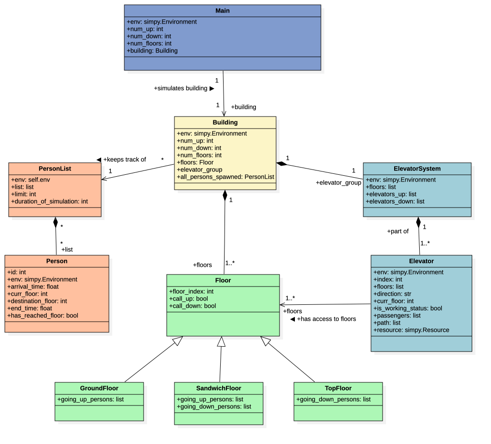
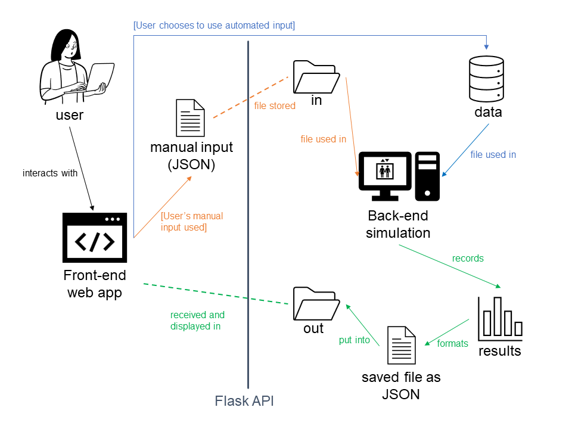
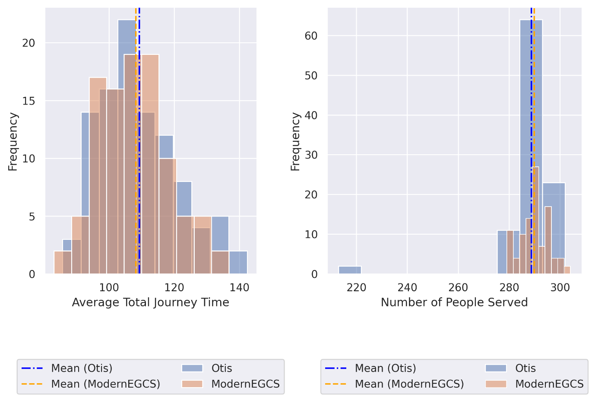

Full-Stack
LiftSim
A containerized, full-stack discrete-event simulation of the elevators in NUS's S16 building, built with an 8-person team for DSA3101. The brief: the building's existing lift dispatch left people waiting too long, so we built a simulation to measure that, and a proposed algorithm to fix it, grounded in traffic data we collected ourselves.
Data collection
Rather than assume arrival patterns, the team stationed pairs of members inside S16's elevators for timed shifts: one person logged every source-destination floor pair, the other logged arrival timestamps. The raw counts were processed in R — Gibbs sampling and MCMC approximated the day's peak periods from the timestamp data, while the source-destination counts were converted into per-period transition probabilities (off-peak, morning, afternoon, evening). Those probabilities drove a non-homogeneous Poisson process that generated realistic passengers for the simulation, via sequential inversion for each passenger's source and destination floor.
Simulation architecture
The backend is an object-oriented SimPy simulation behind a Flask API, with a façade Main class as the sole entry point so the API never touches internal simulation state directly. A Building holds the generated Person objects, the floors (GroundFloor, SandwichFloor, TopFloor, each with different button constraints), and an elevator group — swappable between the baseline and proposed algorithms without changing the rest of the system.


Baseline vs. proposed algorithm
- Otis (baseline) — a simplified model of S16's existing dispatch: elevators are statically typed as "up" (serving rising calls) or "down" (serving landing calls), reflecting the bare-minimum information a conventional system uses.
- ModernEGCS (proposed) — a Modern Elevator Group Control System based on Chiang & Fu (2002). Each hall call is costed against every elevator; a greedy allocator assigns it to the lowest-cost car, with a load-balancing check against each elevator's fair share of calls (floors ÷ elevators) and a path-suitability check so calls aren't assigned to a car that won't actually pass that floor. Every 5 simulated minutes, unserved calls are reassigned, and idle elevators redistribute toward floors weighted by that floor's share of arrival traffic.
Reinforcement learning was considered and rejected: it would have needed elevator-systems and ML expertise the team didn't have time to build, and its lack of transparency made it a poor fit for a result meant to inform real building management.
Results
Both algorithms were run on the same 100 generated passenger sets for a fair comparison. Their means were close, but ModernEGCS was more consistent: lower variance in total journey time (119.73 vs. 143.00) and substantially lower variance in the number of people served (29.99 vs. 127.24) — a tighter, more predictable passenger experience even without moving the average much.

| Avg. total journey time (s) | Variance | Avg. people served | Variance | |
|---|---|---|---|---|
| Otis | 109.26 | 143.00 | 288.71 | 127.24 |
| ModernEGCS | 108.21 | 119.73 | 289.79 | 29.99 |
Limitations
SimPy schedules events synchronously, which strains the realism of concurrent elevators serving passengers mid-trip; the team mitigated this by pre-generating all passengers ahead of the run rather than spawning them live. A more concurrency-accurate implementation would likely need a language built for true multithreading. The six weeks also left only a day's worth of collected traffic data, and unconfirmed assumptions about S16's real dispatch logic since the building's management was unreachable for the rest of the project.